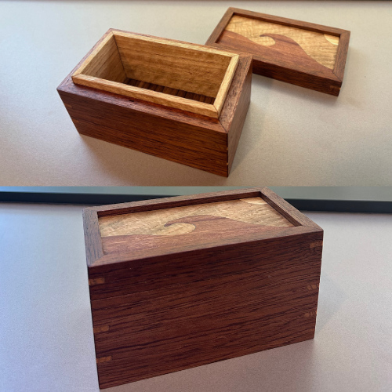
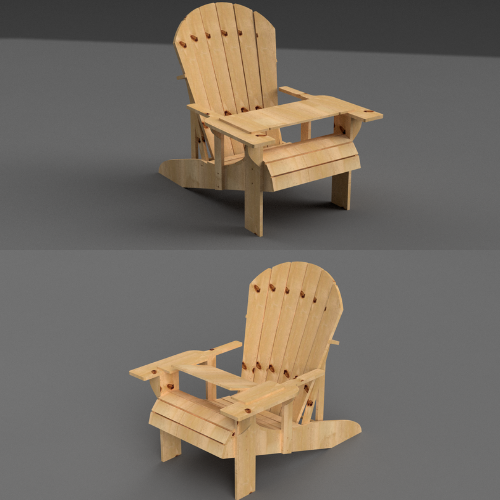
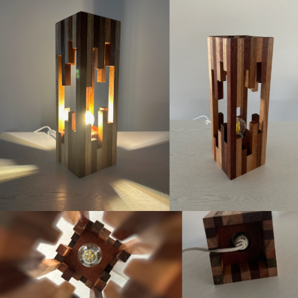

Industrial Technology Projects
A selection of timber and design builds focused on precision, sustainability, and problem-solving. Each project documents process, tooling, and learning outcomes suited to senior TAS contexts.
Heirloom Box
Fine boxmaking featuring keyed mitre joints and decorative veneering. Emphasis on jig setup, blade accuracy, grain matching, and surface finishing to furniture standard.
Design Project — Outdoor Study Chair
Adirondack chair re-designed for outdoor study with an adjustable swing table for laptop and notes. Work includes CAD modelling, ergonomic angles, materials planning, and joinery options suitable for Stage 6 design folios.
Timber Scraps Lamp
Ambient lamp constructed from workshop offcuts to reduce waste. Focus on sustainable practice, light diffusion, safe wiring, and finishing for a refined, warm aesthetic.
Jeweller’s Hammer — Interchangeable Heads
Precision hammer with modular heads for forming and texturing. Highlights turning, heat-treat considerations, handle shaping, and testing. Ideal for demonstrating prototyping and iteration.